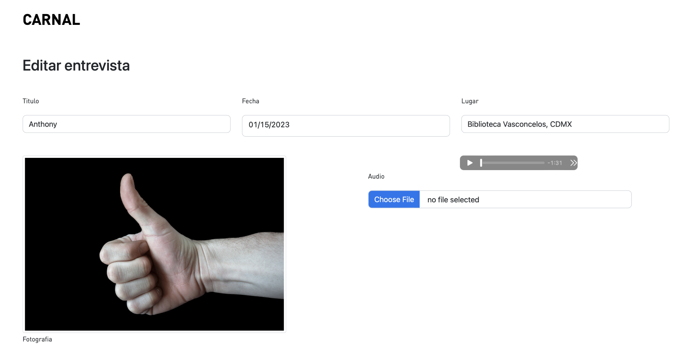

Back to home
Carnal
'Carnal' is a robust project that serves as a collection of audio interviews alongside
a photo of the hand of the interviewee. This project presented a couple of challenges.
The first was to be able to automize the way the interviews were uploaded, since the
client wanted to upload over a thousand interviews. We ended up creating an internal
data base for the client, that only he had access to, where he would be able to add,
edit or delete interviews.
The next challenge was that the client requested a 3D interface for the homepage. We were
able to accomplish this by using the code language 'three.js' and we created a dynamic
3D menu from where you select the interview you want to see.

Odyssey 2.0
Odyssey is a very technical MIS for managing printing resources targeted torwards elderly people.
For this project I acted as the UI engineer and UX designer and it presented some very unique challenges.
The first challenge was to make the website more visually friendly. Because it is a very technical website,
having more accesible UI would balance out the complexity of the navegation. We started off developing an
in-house UI kit and scaling it up to a design system.
This project has been the largest project I have been a part of with a UX team, a UI team and a dev team
working alongside each other to accomplish a highly competitive MIS in the north american printing sector.

Atotonilco
atotonilco web text test

Odyssey 2.0
odyssey design text test

DroneIQ
droneiq design text test

Re Estrenon
re estrenon design text test